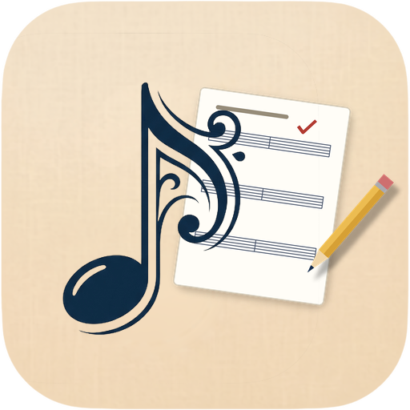

題目列表

感謝您的贊助與支持！
歡迎使用「音樂聽力出考卷」，
一鍵產生作答卷、解答與音檔，
讓備課與出題更輕鬆。
存的是每一題的設定、標題、配分、換行與換頁；套用時會重新出題。
考卷存在這個瀏覽器裡，清除瀏覽器資料就會不見。建議把「音聽出考卷」加入主畫面使用，並定期按「全部匯出」備份。匯入時會帶回所有考卷、模板與題目資料，mp3 可以照常匯出。
累積贊助滿 5,000 元的朋友，名字會以金色顯示。
這個 App 完全免費、沒有廣告，能持續維護與增加新的練習項目，靠的是各位的支持。
無論金額多少，每一份贊助我都由衷感謝 🙏